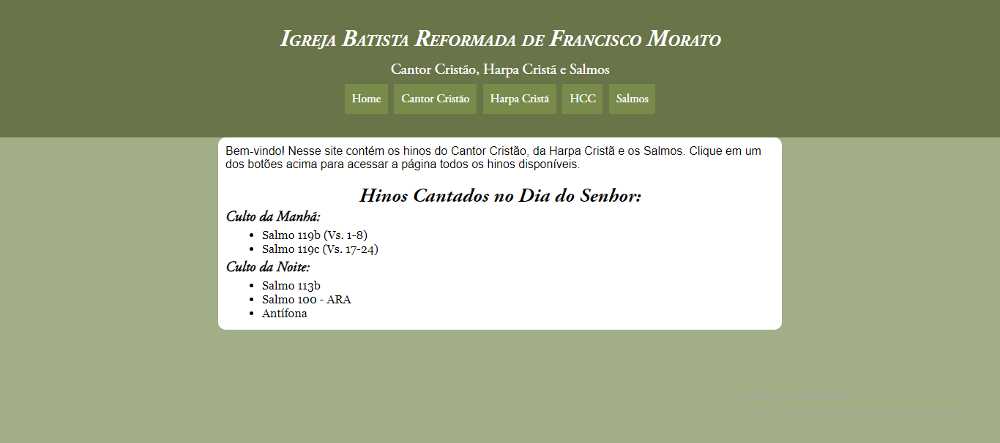

Projetos
Hinos IBRFM
Nesse site tem hinos do Cantor Cristão, da Harpa Cristã, os Salmos e os hinos do HCC
João Calvino
Nesse site tem 18 capítulos do livro "João Calvino Era Assim" escrito por Thea B. Van Halsema da editora Clire.
Nesse site tem hinos do Cantor Cristão, da Harpa Cristã, os Salmos e os hinos do HCC
Nesse site tem 18 capítulos do livro "João Calvino Era Assim" escrito por Thea B. Van Halsema da editora Clire.